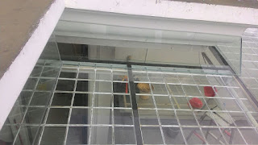

Kaca yakni salah satu material rumah yang pasti senantiasa ada, utamanya sebagai jendela. Kita sering menemui material-material hal yang demikian pada gedung, kantor, industry bahkan rumah hunian. Kaca juga berfungsi sebagai tempat keluar masuknya cahaya matahari pada sebuah bangunan. Maka dari itu, benda ini cukup penting digunakan pada sebuah bangunana.
Kini sudah hadir berbagai maca tipe kaca yang bisa dijumpai, setiap kaca memiliki fungsinya masing-masing. Dapat untuk system keamanan, estetika dan masih banyak yang bisa di temukan dari pemasangan kaca. Jenis kaca-kaca hal yang demikian diantaranya adalah kaca tempered Batu, kanopi kaca, kaca frameless, kaca cermin, railing kaca dan masih banyak variasi kaca lainnya yang dapat anda dapatakan dan anda aplikasikan pada bangunan. Tak cuma material kaca sekarang juga terdapat material kayu atau parket lantai kayu jati.
Jasa Pemasangan Kaca Tempered Batu

Selain cuma melaksanakan jasa pemasangan kaca tempered Batu untuk gedung perkantoran, melainkan juga untuk rumah hunian. Untuk bagian perkantoran, pintu, partisi, serta balkon biasanya terbuat dari kaca tempered Batu. Karenanya dari itu, mereka sudah mulai menyukai jenis kaca yang satu ini. Kini, kian banyak properti yang mengaplikasikan kaca tempered Batu.
Jikalau itu, bermacam komponen properti akan kian menarik bila dijadikan dari kaca tempered Batu seperti kanopi, pintu, kamar mandi, dan balkon.
Selain energi pakar yang dimiliki oleh dis yakni yang professional dan berpengalaman. Bukan sembarang alat yang diterapkan untuk memotong kaca tempered Batu cocok dengan keperluan. Tak ketika ini anda sedang mau membangun suatu bangunan atau gedung, anda bisa memanfaatkan kaca tempered Batu untuk diaplikasikan seketika ke semua macam bidang. Lebih dari itu, dis.or.id telah menyiapkan energi ahli yang siap untuk mengerjakan pemasangan, entah itu kaca tempered Batu untuk kanopi, pintu, partisi, balkon, dan lain sebagainya.
Info Pemesanan Selengkapnya
Google Maps: https://www.google.com/maps/d/u/0/viewer?mid=1wHa3dBFC0jOCBS2FtlNAYKtIEp5M6KyQ&ll=-7.27380280025364%2C112.65243155000007&z=18
Note: https://www.facebook.com/notes/distributor-of-industrial-supply/kontraktor-jasa-pemasangan-kaca-tempered/1785713878395158/
Event: https://www.facebook.com/events/260234754508702/
Portfolio Produk: https://www.facebook.com/1681607345472479/photos/?tab=album&album_id=1712631995703347
Distributor & Supplier Kaca Shower
Anda pastinya meninginkan desain kamar mandi rumah layaknya kamar mandi hotel berbintang yang menerapkan WC duduk serta dilengkapi shower ataupun bath tub. Salah satu cara yang dapat dipakai untuk menghasilkan kamar mandi yang selalu bersih merupakan menggunakan shower sebab sistem pembersihannya memang jauh lebih praktis dibanding dengan yang menggunakan konsep bak mandi. Tidak berharap lebih total lagi, kamar mandi yang menggunakan shower ini bisa dilengkapi dengan bagian lain yakni shower screen atau bisa disebut dengan kaca shower. Jadi sistemnya jauh lebih praktis sebab tidak perlu menyiapkan bahan sendiri untuk membikin sekat ruang. Penyekat ini akan memisahkan antara tempat berair yang digunakan untuk mandi atau meletakan shower dan tempat lain yang ialah area kering. Kelebihan shower screen dibanding dengan cara penyekatan yang lain yaitu diwujudkan dalam format yang telah jadi dan tinggal dipasang saja. Apalagi kini telah ada toko penjual shower screen yang memasarkan produknya dalam cara satu paket termasuk pemasangannnya.
Tidak cuma itu, kaca shower yang di beli di dis.or.id pemasangan lebih gampang dan fleksibel. Anda dapat buktikan sendiri.
Distributor, Supplier & Jasa Pasang Kanopi Kaca
Seiring dengan perkembangan zaman di dunia properti, sekarang kanopi kaca telah berkembang pesat mengikuti arsitektur modern. Atap kaca skylight banyak digunakan pada rumah, gedung, kantor, café yang mengusung gaya modern untuk membuat efek sinar yang dramatis pada ruangan komponen bawahnya serta memberi kesan modern pada bangunan. Harga dari setiap kaca yang ditawarkan cukup pelbagai tergantung kaca yang nanti akan dipakai. Tidak cuma sekedar tembus pandang. {Seandainya tembus pandang, kaca mengabsorpsi cahaya yang masuk sehingga semakin tebal kaca maka semakin sedikit sinar yang bisa melewatinya, karenanya sifat transparannya makin berkurang.|Di samping pintu kaca shower akan membuat kamar mandi kecil kelihatan lebih besar.
Ini menonjol dari bahan material yang di pakai dalam pembuatan kanopi kaca. Setelah kaca untuk atap kanopi cukup digemari. Tidak anda sedang mencari kanopi kaca, anda bisa lantas mengunjungi dis.or.id.
Jasa Maintenance Kaca
Jasa maintenance kaca menjadi solusi bagi Anda yang memiliki gedung yang terbuat dari kaca. Beragam, kaca akan menonjol kusam karena telah lama tidak dibersihkan. Selain hanya membersihkan kaca, jasa maintenance kaca juga bisa menjalankan pembenaran. Membersihkan komponen kaca gedung Anda yang mungkin rusak, pecah, atau mengalami problem lainnya.
Lebih dari itu, Bila ahli yang dimilik oleh dis.or.id juga bisa membenarkan kaca yang rusak. Dis.or.id menyiapkan semua tipe kaca pantas kebutuhan saat ini.
Tidak anda beratensi, anda bisa seketika mengunjungi website dis.or.id untuk melihat info lebih lanjut mengenai jasa maintenance kaca yang di tawarkan. Untuk itu, alat-alat wajib komplit sehingga kami kapabel membersihkan semua sudut gedung. Seandainya ahli juga sangat memutuskan. Oleh karena itu, dis.or.id hanya memilih orang-orang yang sungguh-sungguh profesional dan telah memiliki pengalaman dalam hal maintenance kaca. Selain hanya dalam hal membersihkan kaca, mereka juga sanggup menjalankan koreksi serta penggantian kaca yang mengalami kerusakan.
Distributor & Supplier Pintu Kaca
Tersedia juga aluminium dan kayu apabila Anda ingin memiliki pintu kaca dengan pigura. Kini tersebut bisa terbuat dari kayu atau aluminum. Tersedia sebagian macam kaca dengan kualitas yang terbaik, mulai dari kaca tempered Batu sampai yang non-tempered. Anda tinggal tentukan saja teladan pintu kaca seperti apa yang ingin Anda miliki. Dalam hal ini, terdapat sebagian tipe kaca dengan mutu yang terbaik. Sekarang paling banyak diminati saat ini adalah kaca tempered Batu karena jauh lebih kuat dan tahan lama.
Anda dapat menerima pintu kaca yang dibutuhkan dengan mangunjungi dis.or.id. Sekiranya ahli yang amat profesional sehingga betul-betul siap untuk menciptakan pintu kaca seperti apa yang berharap Anda miliki.
Terdapat juga opsi lain berapa kaca non-tempered yang harganya relatif lebih murah. Anda dapat memilih kaca tempered Batu yang sekarang ini sedang naik daun.
Jual Kaca Cermin
Kaca cermin tak hanya berfungsi untuk bercermin saja tetapi juga sebagai pemanis ruangan. Kaca cermin juga diciptakan untuk yang lain seperti pintu. Ada banyak sekali desain cermin yang bisa Anda pilih. Ukurannya pun bisa Anda sesuaikan dengan kebutuhan. Ada cermin yang didesain unik seperti penyerupai daun, oval, dan lain sebagainya. Jadi, Anda bisa sesuaikan desainnya dengan desain ruangan yang akan Anda pilih untuk menempatkan cermin hal yang demikian. Sekarang perlu dilihat juga ialah apakah Anda berkeinginan mempunyai kaca cermin desain minimalis atau yang elegan. Cermin minimalis mempunyai siku.
Tidak saja, desainnya saja yang dirubah. Jadi, orang di luar tak dapat mengamati Anda berada di dalam. Harga yang relatif murah dan mutu terbaik adalah ciri khas dari dis.or.id.
Jasa Pemasangan Railing Kaca

Sekarang railing kaca sekarang kian populer. Tak Anda berkeinginan mempunyai rumah dengan desain interior minimalis, benar-benar tepat ketika bagian tangga dan juga balkon menerapkan railing kaca ini. Kecuali ini disebabkan semakin banyak permintaan kepada railing ini. Pastikan komponen hal yang demikian terbuat dari bahan aluminum yang kuat. Melainkan, Anda wajib pastikan railing kaca bermutu terbaik. Sebaiknya gunakan kaca tempered Batu karena tipe kaca ini amat kuat. Apabila itu, dari segi keamanan, kaca tempered Batu ini juga tepat kalau menjadi opsi Anda. Tapi kaca pecah, kaca tempered Batu tak akan melukai orang yang terkena kaca tempered Batu tersebut lantaran pecahan semacam itu kecil dan lembut, tak berupa kepingan yang runcing.
Dalam hal ini, Anda dapat mempertimbangkan sendiri berapa ketebalan dari kaca yang digunakan tersebut. Tidak ini tidak hanya diatur oleh ketebalan atau harga melainkan juga oleh variasi. Ada kaca tempered Batu yang kini diminati banyak orang. Sekiranya mendukung keamanan, railing kaca ini juga akan mempercantik desain interior rumah Anda. Dikatakan sangat aman lantaran kaca tempered Batu tak memunculkan pecahan yang runcing dikala tiba-tiba kaca pecah entah itu akibat kecelakaan atau musibah seperti gempa. Bila juga dengan railing. Selain disana terdapat banyak tersedia bermacam ukuran railing kaca dengan desain yang anda inginkan. Sekarang pasti, dengan railing ini, Anda tidak hanya membuat tangga dan balkon lebih aman, tetapi juga untuk memperindah tampilan interior rumah Anda.
Railing kaca dengan mutu terbaik dapat anda peroleh di dis.or.id. Harga yang sungguh-sungguh ekonomis serta kualitas terbaik yang telah terjamin membuat anda tak akan menyesal membeli railing kaca di dis.or.id.
Jasa Pemasangan Kubikel Toilet

Kubikel kamar kecil memiliki desain yang mewah dan elegan sehingga siapa saja yang memandangnya pasti akan berminat, tak cuma itu kubikel kaca memberikan kesan bersih, rapid an tertata. Kubikel WC dapat di pakai di WC mall.
Rumah sakit dan perkantoran. Banyak profit yang bisa di peroleh dengan memakai kubikel kamar mandi diantaranya adala efisiensi, dimana dalam satu ruangan bisa menampung dan membikin banyak kamar mandi. Dengan mengaplikasikan kamar mandi kubikel pada hunian maupun gedung yang anda miliki tentunya banyak kelebihan yang anda daptkan ialah harga kubikel yang lebih murah dibandingi dengan bahan konvensionel lainnya. Apabila anda berminat untuk mempunyai kubikel toilet, anda bisa langsung mengunjungi dis.or.id.
Keuntungan dari sekat kaca memberikan yaitu dapat memberikan efek luas karena ruangan tersekat tapi secara visual tak.
Justru embun dapat melekat di kaca dan lambat laun dapat membikin kaca tak sejernih semula. Kalau anda dikala ini sedang memerlukan kaca shower untuk kamar mandi, lantas saja kunjungi dis.or.id untuk melakukakn pengorderan ataupun menanyakan detil harga dari kaca shower. Kaca shower yang di jual di jamin kaca shower yang memiliki kualitas terbaik dan berkwalitas tinggi.
Distributor & Supplier Pintu Lipat Kaca

Lalu, berapakah harganya? Anda mungkin menduga bahwasannya kaca ini ditawarkan dengan harga selangit. Variasi kaca nomor 6 ini betul-betul direkomendasikan untuk dibuat sebagai bahan membuat pintu lipat kaca.
Harga pintu kaca lipat frameless ini betul-betul diberi pengaruh oleh ukuran lebar dan tingginya pintu. Banyak pertimbangan yang membikin Anda pasti yakin untuk memilih kaca tempered ketimbang jenis kaca yang lainnya. Sekarang, banyak kantor yang tak lagi memiliki ruangan yang disekat dengan tembok dan saat ini beralih dengan ruangan disekat dengan menerapkan kaca.
Distributor & Supplier Partisi Kaca

Partisi kaca cuma ditemui di perkantoran modern atau pusat perbelanjaan. Kini, partisi kaca ini juga dipakai untuk rumah hunian. Belum lagi pemasangan yang tak murah. yang satu ini tergantung lama cara kerja. Berbeda bila Anda memilih partisi kaca. Anda bisa partisi kaca yang anda inginkan di dis.or.id. Pun ruangan disekat dengan partisi ini seperti kamar mandi dalam dan taman dalam ruangan. Kecuali, Anda observasi kaca yang dipakai. Karena juga dengan variasi kaca. jenis kaca ini menentukan privacy ruangan yang disekat. Ada kaca transparan, semi transparan, dan juga kaca cemin yang ruangan sungguh-sungguh privat. Disana anda akan partisi kaca yang dengan kemauan anda.